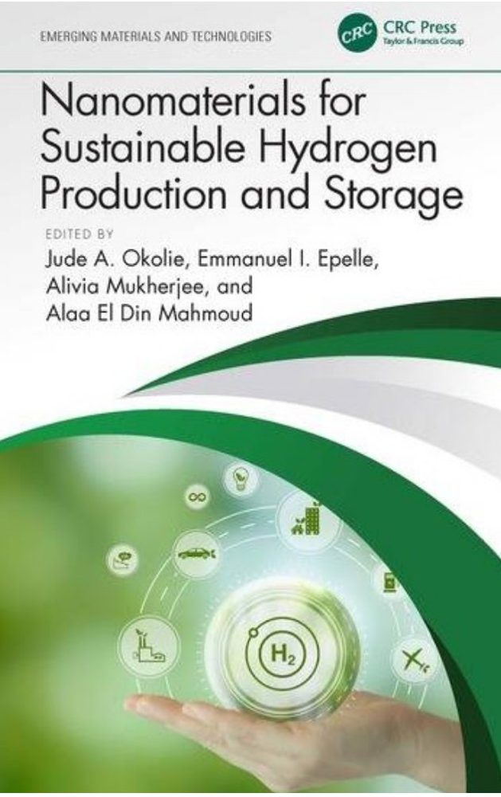
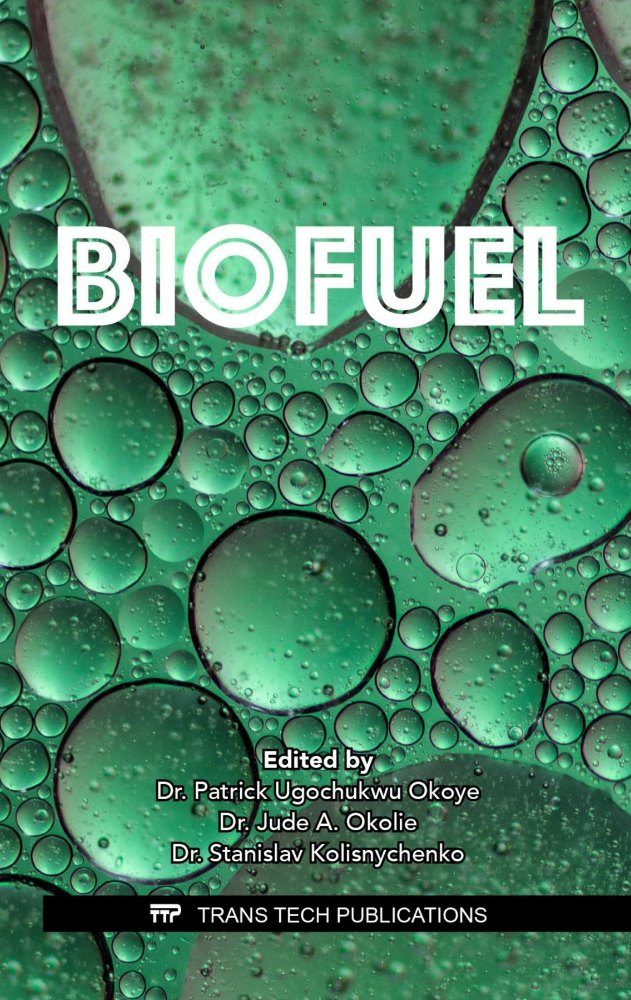

Publications
Peer-reviewed articles and book chapters, organized by research theme. For the most up-to-date list, see Google Scholar.
Thermochemical and biochemical conversion of waste biomass to biofuels and value-added chemicals
- Tabat, M.E., Omoarukhe, F.O., Güleç, F., Adeniyi, D.E., Mukherjee, A., Okoye, P.U., Ogbaga, C.C., Epelle, E.I., Akande, O. and Okolie, J.A., 2023. Process design, exergy, and economic assessment of a conceptual mobile autothermal methane pyrolysis unit for onsite hydrogen production. Energy Conversion and Management, 278, p.116707.
- Rogachuk, B.E. and Okolie, J.A., 2023. Waste tires based biorefinery for biofuels and value-added materials production. Chemical Engineering Journal Advances, p.100476.
- Okolie, J.A., Jimoh, T., Akande, O., Okoye, P.U., Ogbaga, C.C., Adeleke, A.A., Ikubanni, P.P., Gulec, F. and Amenaghawon, A.N., 2023. Pathways for the Valorization of Animal and Human Waste to Biofuels, Sustainable Materials and Value-Added Chemicals.
- Oke, E.O., Adeyi, O., Okolo, B.I., Adeyi, J.A., Nnabodo, D., Ude, C.J., Ajala, O.O., Okhale, S.E., Okolie, J.A., Otolorin, J.A. and Adeoye, B.K., 2023. Solid-liquid microwave-assisted extraction of bioactive extract recovery from Hunteria umbellata seeds: Non-mechanistic modelling, bi-objective optimization, HPLC finger printing and scale-up techno-economics with sensitivity analysis. Cleaner Chemical Engineering, 5, p.100097.
- Umenweke, G.C., Pace, R.B., Santillan-Jimenez, E. and Okolie, J.A., 2022. Techno-economic and life-cycle analyses of Sustainable Aviation Fuel production via integrated catalytic deoxygenation and hydrothermal gasification. Chemical Engineering Journal, p.139215.
- Okolie, J.A., Escobar, J.I., Umenweke, G., Khanday, W., & Okoye, P.U. (2022). Continuous biodiesel production: A review of advances in catalysis, microfluidic and cavitation reactors. Fuel, 307, 121821.
- Afolabi, I.C., Epelle, E.I., Gunes, B., Güleç, F., & Okolie, J.A. (2022). Data-Driven Machine Learning Approach for Predicting the Higher Heating Value of Different Biomass Classes. Clean Technologies, 4(4), 1227-1241.
- Okolie, J.A., 2022. Insights on production mechanism and industrial applications of renewable propylene glycol. iScience, p.104903.
- Okoye, P.U., Duque-Brito, E., Lobata-Peralta, D.R., Okolie, J.A., Arias, D.M., & Sebastian, J.P. (2022). Catalytic Conversion of Glycerol to Bio-Based Aromatics.
- Okolie, J.A., Tabat, M.E., Ogbaga, C.C., Okoye, P.U., Davis, P. and Gunes, B., 2022. Economic and environmental assessments of a novel integrated process for biomethane production and ammonia recovery from pot ale. Chemical Engineering Journal, 446, p.137234.
- Omoarukhe, F.O., Epelle, E.I., Ogbaga, C.C., & Okolie, J.A. (2022). Stochastic economic evaluation of different production pathways for renewable propylene glycol production via catalytic hydrogenolysis of glycerol. Reaction Chemistry & Engineering.
- Patra, B.R., Okolie, J.A., Mukherjee, A., Pattnaik, F., Nanda, S., Dalai, A.K., ... & Sarangi, P.K. (2022). Recent Advancements in Thermochemical Biomethane Production. In Biomethane (pp. 93-110). Apple Academic Press.
- Mukherjee, A., Patra, B.R., Pattnaik, F., Okolie, J.A., Sonil, N., & Dalai, A.K. (2022). Biomethane Production through Anaerobic Digestion of Lignocellulosic Biomass and Organic Wastes. Biomethane, 61-92.
- Pattnaik, F., Patra, B.R., Okolie, J.A., Nanda, S., Dalai, A.K. and Naik, S., 2022. A review of thermocatalytic conversion of biogenic wastes into crude biofuels and biochemical precursors. Fuel, 320, p.123857.
- Dalton, C., Okolie, J.A., Davis, P. and Gunes, B., 2022. Design of a pre-treatment integrated anaerobic digestion treatment facility for decarbonising whiskey industry: A circular economy perspective. Heliyon, p.e09522.
- Jha, S., Okolie, J.A., Nanda, S. and Dalai, A.K. (2022). A review of biomass resources and thermochemical conversion technologies. Chemical Engineering & Technology.
- Rowan, M., Umenweke, G.C., Epelle, E.I., Afolabi, I.C., Okoye, P.U., Gunes, B. and Okolie, J.A., 2022. Anaerobic co-digestion of food waste and agricultural residues. An overview of feedstock properties and the impact of biochar addition. Digital Chemical Engineering, p.100046.
- Okolie, J.A., Sajeev, E., Shekher, S., Desongu, K.S., Ogbaga, C.C., & Gunes, B. (2022). Application of Magnetic Nanoparticles in Bioreactors to Enhance Mass Transfer during Syngas Fermentation.
- Adeleke, A.A., Ikubanni, P.P., Odusote, J.K., Okolie, J.A., Christopher, C.T., Orhadahwe, T.A., ... & Ammasi, A. (2022). Optimization of Densification Parameters for Lean Grade Subbituminous Coal. Petroleum & Coal, 64(3).
- Udourioh, G.A., Solomon, M., Matthews-Amune, C.O., Epelle, E., Okolie, J., Agbazue, V.E., & Onyenze, U. (2023). Current Trends in the Synthesis, Characterization and Application of Metal Organic Frameworks. Reaction Chemistry & Engineering.
- Okolie, J.A., Tabat, M.E., Gunes, B., Emmanuel, E.I., Mukherjee, A., Nanda, S., & Dalai, A.K. (2021). A techno-economic assessment of biomethane and bioethanol production from crude glycerol through integrated hydrothermal gasification, syngas fermentation and biomethanation. Energy Conversion and Management: X, 100131.
- Okolie, J.A., Mukherjee, A., Nanda, S., Dalai, A.K., & Kozinski, J.A. (2021). Catalytic supercritical water gasification of soybean straw: Effects of catalyst supports and promoters. Industrial & Engineering Chemistry Research.
- Okolie, J.A., Epelle, E.I., Nanda, S., Castello, D., Dalai, A.K., & Kozinski, J.A. (2021). Modeling and process optimization of hydrothermal gasification for hydrogen production: A comprehensive review. The Journal of Supercritical Fluids, 105199.
- Okolie, J.A., Patra, B.R., Mukherjee, A., Nanda, S., Dalai, A.K., & Kozinski, J.A. (2021). Futuristic applications of hydrogen in energy, biorefining, aerospace, pharmaceuticals, and metallurgy. International Journal of Hydrogen Energy.
- Okolie, J.A., Nanda, S., Dalai, A.K., & Kozinski, J.A. (2021). Techno-economic evaluation and sensitivity analysis of a conceptual design for supercritical water gasification of soybean straw to produce hydrogen. Bioresource Technology, 331, 125005.
- Okolie, J.A., Nanda, S., Dalai, A.K., & Kozinski, J.A. (2021). Optimization studies for hydrothermal gasification of partially burnt wood from forest fires for hydrogen-rich syngas production using Taguchi experimental design. Environmental Pollution, 283, 117040.
- Okolie, J.A., Mukherjee, A., Nanda, S., Dalai, A.K., & Kozinski, J.A. (2021). Next-generation biofuels and platform biochemicals from lignocellulosic biomass. International Journal of Energy Research.
- Nanda, S., Okolie, J.A., Patel, R., Pattnaik, F., Fang, Z., Dalai, A.K., ... & Naik, S. (2021). Catalytic hydrothermal co-gasification of canola meal and low-density polyethylene using mixed metal oxides for hydrogen production. International Journal of Hydrogen Energy.
- Okolie, J.A., Nanda, S., Dalai, A.K., & Kozinski, J.A. (2021). Chemistry and specialty industrial applications of lignocellulosic biomass. Waste and Biomass Valorization, 12(5), 2145-2169.
- Okolie, J.A., Nanda, S., Dalai, A.K., & Kozinski, J.A. (2020). Hydrothermal gasification of soybean straw and flax straw for hydrogen-rich syngas production: Experimental and thermodynamic modeling. Energy Conversion and Management, 208, 112545.
- Okolie, J.A., Nanda, S., Dalai, A.K., & Kozinski, J.A. (2020). Optimization and modeling of process parameters during hydrothermal gasification of biomass model compounds to generate hydrogen-rich gas products. International Journal of Hydrogen Energy, 45(36), 18275-18288.
- Okolie, J.A., Nanda, S., Dalai, A.K., Berruti, F., & Kozinski, J.A. (2020). A review on subcritical and supercritical water gasification of biogenic, polymeric and petroleum wastes to hydrogen-rich synthesis gas. Renewable and Sustainable Energy Reviews, 119, 109546.
- Okolie, J.A., Rana, R., Nanda, S., Dalai, A.K., & Kozinski, J.A. (2019). Supercritical water gasification of biomass: a state-of-the-art review of process parameters, reaction mechanisms and catalysis. Sustainable Energy & Fuels, 3(3), 578-598.
Development of novel energy storage materials, carbon capture and environmental remediation
- Udourioh, G.A., Solomon, M., Matthews-Amune, C.O., Epelle, E., Okolie, J., Agbazue, V.E. and Onyenze, U., 2023. Current Trends in the Synthesis, Characterization and Application of Metal Organic Frameworks. Reaction Chemistry & Engineering.
- Epelle, E.I., Macfarlane, A., Cusack, M., Burns, A., Okolie, J.A., Vichare, P., Rolland, L. and Yaseen, M., 2023. Ozone Decontamination of Medical and Nonmedical Devices: An Assessment of Design and Implementation Considerations. Industrial & Engineering Chemistry Research.
- Ortiz-Olivares, R.D., Lobato-Peralta, D.R., Arias, D.M., Okolie, J.A., Cuentas-Gallegos, A.K., Sebastian, P.J., Mayer, A.R. and Okoye, P.U., 2022. Production of nanoarchitectonics corncob activated carbon as electrode material for enhanced supercapacitor performance. Journal of Energy Storage, 55, p.105447.
- Mukherjee, A., Okolie, J.A., Niu, C. and Dalai, A.K., 2022. Techno-Economic analysis of activated carbon production from spent coffee grounds: Comparative evaluation of different production routes. Energy Conversion and Management: X, 14, p.100218.
- Epelle, E.I., Okoye, P.U., Roddy, S., Gunes, B., & Okolie, J.A. (2022). Advances in the Applications of Nanomaterials for Wastewater Treatment. Environments, 9(11), 141.
- Okolie, J.A., Savage, S., Ogbaga, C.C., & Gunes, B. (2022). Assessing the potential of machine learning methods to study the removal of pharmaceuticals from wastewater using biochar or activated carbon. Total Environment Research Themes, 1, 100001.
- Epelle, E.I., Macfarlane, A., Cusack, M., Burns, A., Okolie, J.A., Mackay, W., ... & Yaseen, M. (2022). Ozone application in different industries: a review of recent developments. Chemical Engineering Journal, 140188.
- Epelle, E.I., Desongu, K.S., Obande, W., Adeleke, A.A., Ikubanni, P.P., Okolie, J.A., & Gunes, B. (2022). A comprehensive review of hydrogen production and storage: A focus on the role of nanomaterials. International Journal of Hydrogen Energy.
- Epelle, E.I., Obande, W., Udourioh, G.A., Afolabi, I.C., Desongu, K.S., Orivri, U., Gunes, B. and Okolie, J.A., 2022. Perspectives and prospects of underground hydrogen storage and natural hydrogen. Sustainable Energy & Fuels.
- Shekhar, S., Sharma, S., Okolie, J.A., Kumar, A., Sharma, B., Meena, M.K., ... & Sarkar, A. (2022). Synthesis, structural elucidation, biological screening, and density functional theory calculations of Cu(II), Ni(II), Mn(II), and Co(II) complexes of 20 Z-N-((Z)-2-(6-nitrobenzo[d]thiazol-2-ylimino)-1,2-diphenylethylidene)-5-nitrobenzo[d]thiazol-2-amine Schiff base ligand. Applied Organometallic Chemistry, 36(8), e6766.
- Reddy, S.N., Nanda, S., Okolie, J.A., Dalai, A.K., Hicks, M.C., Hegde, U.G., & Kozinski, J.A. (2021). Hydrothermal flames for subaquatic, terrestrial and extraterrestrial applications. Journal of Hazardous Materials, 127520.
- Mukherjee, A., Okolie, J.A., Niu, C., & Dalai, A.K. (2021). Experimental and Modeling Studies of Torrefaction of Spent Coffee Grounds and Coffee Husk: Effects on Surface Chemistry and Carbon Dioxide Capture Performance. ACS Omega, 7(1), 638-653.
- Mukherjee, A., Okolie, J.A., Tyagi, R., Dalai, A.K., & Niu, C. (2021). Pyrolysis kinetics and activation thermodynamic parameters of exhausted coffee residue and coffee husk using thermogravimetric analysis. The Canadian Journal of Chemical Engineering.
- Mukherjee, A., Okolie, J.A., Abdelrasoul, A., Niu, C., & Dalai, A.K. (2019). Review of post-combustion carbon dioxide capture technologies using activated carbon. Journal of Environmental Sciences, 83, 46-63.
Research and reflection on Pedagogy
- Okolie, J.A., 2022. Embedding equity, diversity, and inclusivity while teaching organic chemistry lab: An instructor's perspective. Matter, 5(8), pp.2390-2392.
- Okolie, J.A., & Epelle, E.I. (2022). Educate the educators: How to best prepare educators in STEMM for teaching positions. Matter, 5(10), 3083-3085.
- Okolie, J.A. (2022). Teaching First-Year Chemical Engineering Research during COVID-19 Pandemic: Experience and Challenges. Available at SSRN 4205108.
Computational fluid dynamics and reservoir modelling for multiphase systems
- Epelle, E.I., Obande, W., Okolie, J.A., Wilberforce, T., & Gerogiorgis, D.I. (2021). CFD modelling and simulation of drill cuttings transport efficiency in annular bends: Effect of particle size polydispersity. Journal of Petroleum Science and Engineering, 109795.
- Epelle, E.I., Oyinbo, J.O., Okolie, J.A., & Gerogiorgis, D.I. (2021). A comparative performance evaluation of cubic equations of state for predicting the compositional distribution of hydrate inhibitors in reservoir fluid systems. Fluid Phase Equilibria, 535, 112964.
Books

Data-Driven Machine Learning Applications in Thermochemical Conversion ProcessesEdited by J. Okolie, A. Giwa, P. Okoye, B. Oboirien · Elsevier · ISBN 978-0-443-33372-9

Nanomaterials for Sustainable Hydrogen Production and StorageEdited by J.A. Okolie, E.I. Epelle, A. Mukherjee, A.E.D. Mahmoud · CRC Press

Activated Carbon: Synthesis, Analysis, and Industrial ApplicationsJ.A. Okolie, A. Mukherjee · Elsevier

Lab-at-Home Experiments in Chemistry and Chemical EngineeringJ.A. Okolie, U.P. Okoye, with contributions by Maya Fetzer

BiofuelEdited by P.U. Okoye, J.A. Okolie, S. Kolisnychenko · Trans Tech Publications